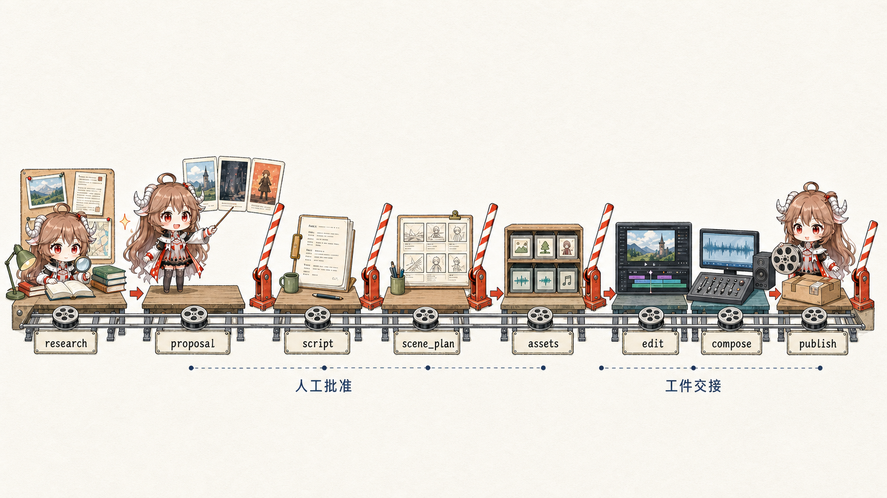
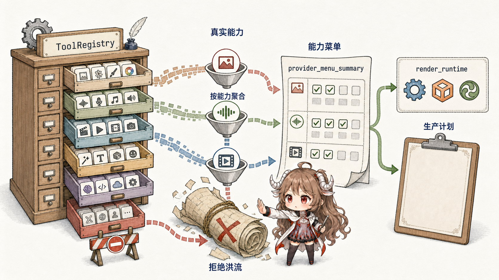
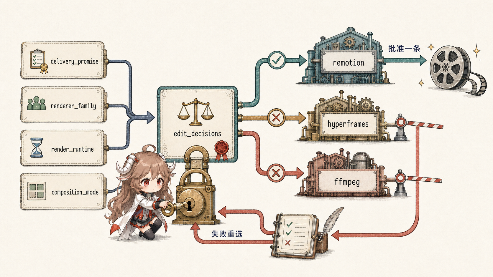

继续上一章那支 AI MV。Temporal 解决的是它怎样拥有一个不会随着进程消失的执行身份； 但任务还活着，并不等于它知道该拍什么、什么时候必须等人、环境里能用哪些 provider，也不等于一个 MP4 已经达到交付标准。 这一章把镜头推近到生产现场：同一个 coding agent 怎样在仓库里读规则、产出结构化工件、调用工具、接受审批并留下恢复点。
阅读契约。 全文始终跟踪“九十秒霓虹城市 MV”。读完后，应当能复述一次制作如何从 manifest 走到 stage director， 再走到 artifact、checkpoint、ToolRegistry、render runtime 与 final review；还要能指出哪些约束由 Python 强制， 哪些只是 agent 必须遵守的仓库契约。
证据边界。 本文固定在 c36e412 源码快照。 YAML manifest 与 Markdown skills 是给 agent 的可读执行契约；只有文中明确链接到 Python 的 schema 校验、gate 拒绝、 文件写入、工具发现和 render routing 才称为代码强制。仓库里没有另一个 Python orchestrator 在后台自动扮演制片人。
一、一句 prompt 为什么不是生产系统
如果把任务直接写成“生成九十秒霓虹城市 MV”，模型当然可以马上开始：先写几段旁白，再调图片或视频 API，最后拼成 MP4。 但生产过程里最贵的错误往往早于渲染发生：主题理解错了、三个创意方向其实只是同一个方向换标题、环境没有配置所选 provider、 用户以为会得到真实运动画面，系统却在失败后静默退化成图片平移。
| 一句 prompt 没有表达的责任 | 一旦缺失会发生什么 | OpenMontage 放在哪里 |
|---|---|---|
| 当前阶段与输入工件 | 返工时不知道该退回脚本、场景还是素材。 | pipeline_defs/*.yaml |
| 创作决定与备选项 | 换 provider、声音或渲染器后，只剩最后结果，没有原因。 | proposal_packet 与 decision_log |
| 人工批准 | 昂贵素材已经生成，用户才发现方向不对。 | manifest gate 与 checkpoint 状态 |
| 真实能力 | 计划建立在未安装 runtime 或缺失 API key 上。 | ToolRegistry preflight |
| 交付承诺 | render 成功被误当成产品完成。 | final_review 与 publish gate |
OpenMontage 的 Rule Zero 先把入口收紧：所有制作必须选择 pipeline、读取 manifest、完成 preflight，再逐阶段读取对应的 director skill。 这条规则不是为了制造更多文件，而是把“模型临场发挥”改造成“agent 在显式生产合同中做判断”。
二、核心心智模型：Agent 是控制平面，Python 是工具与持久化
仓库的 项目上下文 把架构写得非常直接：agent 承担编排、创作决策、review 与阶段推进；Python 负责可调用工具和持久化。 所以这里的 executive producer、director、reviewer 首先是 Markdown 中的角色协议，不是常驻 Python service。
AGENT_GUIDE.md
-> 选择 animated-explainer
-> 读取 pipeline_defs/animated-explainer.yaml
-> 读取当前 stage 的 director skill
-> 产出 schema-valid artifact
-> reviewer skill 自查
-> checkpoint utility 持久化并执行 gate
-> 进入下一 stage 或等待人工批准这是一种很适合 coding agent 的分层。稳定规则可以版本化、review、被人和模型共同阅读；变化很快的 provider 通过工具注册表暴露； 只有“不能靠自觉”的部分才落到代码。代价也同样明确：如果 agent 没有读取规则、上下文漂移或平台不支持可靠的工具调用， Markdown 本身不会像进程内 orchestrator 那样主动夺回控制权。
2.1 固定合同与运行时现实必须分开
| 层 | 回答什么 | 典型文件 |
|---|---|---|
| 生产合同 | 必须经过哪些阶段，哪些工件与关口不可省。 | AGENT_GUIDE.md、pipeline_defs/ |
| 工作方法 | 当前角色应如何研究、提案、写脚本、审片。 | skills/ |
| 能力现实 | 这台机器此刻有哪些 provider、runtime 与依赖。 | tools/tool_registry.py |
| 项目事实 | 用户批准了什么、已经做完什么、产物在哪里。 | projects/<id>/ 下的 artifacts 与 checkpoints |
三、Manifest 不执行视频，它定义一条可审计的路线
对这支 MV，最接近主线的是
animated-explainer.yaml。
它把制作拆成 research → proposal → script → scene_plan → assets → edit → compose → publish，
并为每个阶段声明输入工件、产出、可用工具、review focus、success criteria 与人工批准策略。

这里最值得借鉴的不是阶段数量，而是每次交接都变成了有名字的 artifact。proposal 不是聊天里一句“就走方向 B”，
而是必须带至少三个 concept、production plan、成本估计和批准状态的 proposal_packet；
compose 也不是只返回文件路径，而要同时产生 render_report 与 final_review。
下游读工件，不必依赖 agent 还记得上百轮聊天里的隐含决定。
3.1 Stage director 是“怎样做”，schema 是“至少长什么样”
Manifest 只告诉 agent 现在要产出 proposal；具体怎样给出互相不同的方向、怎样解释成本与质量权衡，
由 proposal director skill 指导。另一方面，
proposal schema
把最低结构变成机器可验证条件，并要求显式记录 render_runtime。
{
"selected_concept": {
"concept_id": "c2",
"rationale": "城市从沉睡到点亮，和音乐层次同步"
},
"production_plan": {
"pipeline": "animated-explainer",
"renderer_family": "cinematic-trailer",
"render_runtime": "hyperframes",
"composition_mode": "atelier",
"delivery_promise": {
"promise_type": "motion_led",
"motion_required": true,
"tone_mode": "cinematic",
"quality_floor": "presentable"
}
},
"approval": {
"status": "approved"
}
}这是教学用缩略形状，不是可直接提交的完整 artifact。关键在于把“方向”“技术 runtime”“创作方式”和“交付承诺”拆成不同字段： 后面如果 renderer 发生变化，就能判断它是合理实现调整，还是偷偷改变了用户批准的作品性质。
四、Checkpoint 把昂贵创作变成可恢复的项目状态
init_project()
先建立项目目录与 project.json；每个阶段再写 checkpoint_<stage>.json。
状态可以是 in_progress、awaiting_human 或 completed，长阶段还可以把已完成场景写进 partial progress。
history/ 保留阶段重做与批准转换的旧版本。
4.1 人工 gate 不只是 prompt 里的提醒
Animated explainer 的 proposal、script、scene_plan、assets 与 publish 都在 manifest 中声明人工批准。
write_checkpoint() 的 gate enforcement
会重新读取 manifest：如果一个 gated stage 没有 human_approved=True 却要写成 completed，代码直接抛错。
这就是“指令驱动但关键边界 fail closed”的具体例子。
4.2 原子写入、历史版本与 decision log 各自解决不同问题
当前 checkpoint 先序列化到临时文件，再通过
os.replace
原子替换；被覆盖的非 in_progress checkpoint 会复制进 history/。
与阶段状态分开的
decision_log
则保存每个重要选择的备选项、选中项、理由和用户批准。前者回答“做到哪里”，后者回答“为什么这样做”。
projects/neon-city-mv/
project.json
decision_log.json
checkpoint_proposal.json
checkpoint_script.json
checkpoint_assets.json
history/
checkpoint_proposal_....json
artifacts/
assets/
renders/
final.mp4
get_next_stage()
会按 pipeline 顺序寻找第一个未完成阶段。新的 agent 会话因此能读取项目文件继续；但“能读文件继续”与“执行系统自动 replay”仍然是两种承诺，
第八节会专门把它们拆开。
五、Preflight 先问“真实能做什么”，再承诺创意
视频工具变化很快。同一个能力可能有本地模型、云 provider、多个价格与依赖；静态列一张工具表，很快就与机器现实脱节。
OpenMontage 的
discover()
遍历 tools package，注册实际存在的具体工具；selector 按 capability 聚合 provider，而不是让 director 绑定一个固定品牌。

给人看的入口不是原始工具 dump，而是
provider_menu_summary()：
它汇总每类 capability 的 configured/total、可用与不可用 provider、setup offer、runtime warning，以及
Remotion、HyperFrames、FFmpeg 的可用性。这样 agent 可以在花钱之前告诉用户“当前能做什么、缺什么、降级会改变什么”。
ToolRegistry.discover()
-> provider_menu_summary()
composition_runtimes
capabilities[]
setup_offers[]
runtime_warnings[]
-> proposal_packet.production_plan
-> 用户批准 provider / cost / runtime
-> 才开始 assets六、先锁定渲染承诺，失败时也不准静默换引擎
OpenMontage 把三件常被混在一起的事拆开：delivery_promise 说作品答应交付什么；
renderer_family 说创作语法；render_runtime 说真正运行 Remotion、HyperFrames 还是 FFmpeg。
composition_mode 又独立描述是用可复用模板，还是为单支作品手工搭建 atelier composition。
仓库契约要求在 proposal 阶段把可用 runtime 摆给用户，并记录选择。
到真正渲染时，
video_compose._render()
拒绝缺失或未知的 render_runtime，然后严格路由到对应实现。明确选择 FFmpeg 时不会自动“升级”；
Remotion 失败时也不会悄悄退到另一条路径。

6.1 为什么“可播放”仍然不是“可交付”
Render 前，工具会验证 cut、asset 与 scene plan；Render 后，
同一入口触发 final review。
final_review schema
要求记录容器与音轨、抽帧检查、音频抽查、字幕覆盖，以及实际 runtime 是否保持 proposal 的承诺。
如果 review 为 fail，ToolResult 也会失败，不能把文件包装成完成品。
七、这套设计真正聪明的地方：把判断放在正确的一侧
| 判断 | 更适合放在哪里 | 原因 |
|---|---|---|
| 哪个创意更适合这首歌 | Agent + proposal director + 用户。 | 需要语义、品味与协商，难以写成稳定 Python 分支。 |
| 提案至少包含哪些字段 | JSON Schema。 | 结构完整性可以确定验证。 |
| 当前机器有哪些视频 provider | ToolRegistry。 | 这是运行时事实，不能靠文档猜。 |
| 一个人工 gate 能否被标记完成 | Checkpoint utility。 | 不能把不可越过的边界只写成建议。 |
| 素材风格是否一致 | Reviewer skill + 人。 | 需要对作品做语义与视觉判断。 |
| MP4 是否有音轨、时长与字幕证据 | Renderer + final review artifact。 | 可以对真实产物取证。 |
这也解释了为什么 OpenMontage 不是“用 Markdown 代替代码”。它真正做的是把约束分级： 创作方法保留为可以进化的指令，结构合同放进 schema，环境事实交给 registry，越权风险交给 Python 拒绝， 最后再把真实输出送回 review。优雅之处不在于少写了一个 orchestrator class，而在于每种责任都有合适的证据形状。
八、与 Temporal 的边界：文件恢复不是持久化执行
最关键的结论。 OpenMontage 当前快照没有使用 Temporal，也没有展示一个跨进程自动调度 stage、重放控制流、分发 task queue 的服务。 它的 checkpoint 让项目工作可恢复、可审计；Temporal 的 Event History 让执行控制流可由新的 Worker 重建。
| 故障或暂停 | OpenMontage 文件协议能提供什么 | Temporal durable execution 额外提供什么 |
|---|---|---|
| Agent 会话结束 | 下一会话读取 checkpoint、artifacts 与 decision log，继续下一个未完成阶段。 | Workflow Execution 独立于任何会话持续存在。 |
| 素材做到 scene-04 时失败 | in_progress partial progress 可记录已完成 scene，agent 据此跳过。 | Activity attempt、retry、timer 与完成事实由服务保存并重新调度。 |
| 人工批准等待一夜 | awaiting_human 文件保留关口，下一会话重新展示。 | Workflow 可持久等待消息，不需要业务自己唤醒会话并解释文件。 |
| 同一个外部生成调用回执丢失 | 仍需 tool/provider 的幂等键与业务账本。 | Activity 也仍需外部幂等，但重试与执行历史由 durable runtime 管理。 |
两者最自然的组合不是把 OpenMontage 的 director 改写成 Temporal 内部 DSL，而是保持层次： Temporal 或其他 durable controller 拥有整次制作的业务生命；OpenMontage agent 在某个 Workflow/Activity 边界内完成一段生产语义； provider 与对象存储拥有外部副作用和大文件。具体要把 durable unit 设成整支制作、一个 stage，还是一个昂贵 scene， 取决于重复成本、人工等待与可观测要求。
九、从 OpenMontage 带走的七条规则
- 先选择生产合同，再调用生成工具。入口必须落到 manifest，而不是临时脚本。
- 每次阶段交接都交 artifact。下游依赖结构化工件，不依赖长对话里的隐含记忆。
- 把人类批准写成状态，并在代码层拒绝越权。“记得问一下”不算 gate。
- 创意承诺必须建立在 preflight 的真实能力上。provider 与 runtime 是运行时事实。
- 重要决定保存备选项与理由。只记录最后选择，无法审计 fallback 是否改变了产品。
- 渲染器失败不能静默改变作品。runtime、composition mode 与 delivery promise 要分别锁定。
- 把生成、验证、采用、发布拆成不同状态。文件存在只是验收链的开始。
OpenMontage 最值得看的，不是它能连多少个模型，而是它给 coding agent 一间有账本、有工序、有门禁、有工具盘点、有验片室的工作室。 这套结构仍然依赖 agent 忠实执行指令，也还没有替代 durable runtime；但它把“做视频”从一次不可追溯的模型行为， 推进成了一条人和 agent 都能检查、暂停、恢复与修正的生产路线。